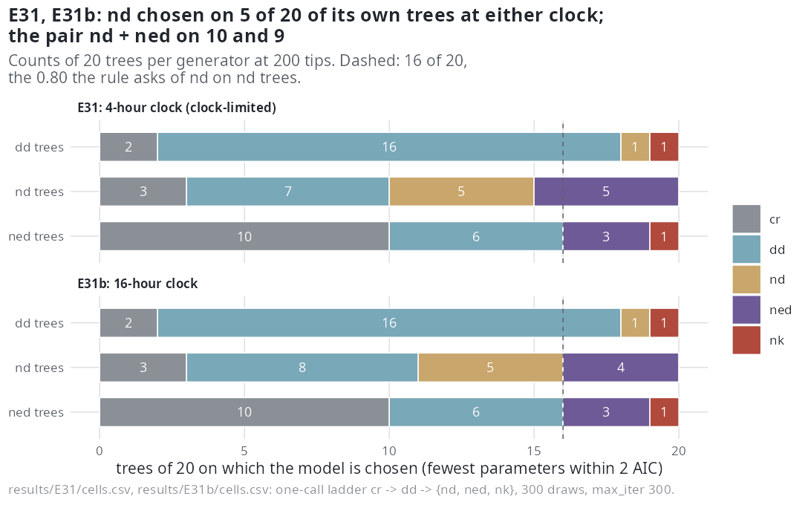

E31 — Can the ladder tell the pendant-age model from distinctiveness at 200 tips?
| Status | E31 complete and clock-limited (the four-hour clock ended 14 of 20 nd and 16 of 20 ned fits); E31b, the same run with a 16-hour clock, complete (its ned row still clock-limited, 3 of 20). Superseded by E47 (separating nd from ned) and E46 (nd at 200 tips) when they report (Estimability) |
| Package build | emphasis f30a791 |
| Driver / analysis | sim/E27-conditions.R --cells n200 --gens dd,nd,ned --max-iter 300 --clock-scale 2 (E31b --clock-scale 8); sim/E31-analysis.R, sim/E31b-analysis.R |
| Data | results/E31/ and results/E31b/: cells.csv, ladder.csv (300 rows each), trees.csv; report/e31-numbers.tex, e31b-numbers.tex |
Question
At 100 tips the ladder never named the pendant-age model on its own trees (E23, 0 of 10; E27 did not generate from it). At 200 tips E23 named it on 4 of 6 of its own trees, on 3 of 12 trees with no lineage-level effect, and where it was not named on its own trees it named ned. Six trees a generator was the whole evidence. E31 puts 20 trees from each of nd and ned and 20 null trees through the one-call ladder at a budget meant to let fits finish.
Design
| Parameter | Value | Meaning |
|---|---|---|
| generators | nd and ned at \(\log 0.65\) per scale unit of \(D\) or ED on speciation; dd as the null |
exponential link, crown 15, turnover 0.10, \(\rho = 1\) |
| generating coefficients | \(\beta_D = -0.169\) per time unit; \(\beta_{ED} = -0.112\) per unit | ladder.csv, beta_gen |
| tips | 200 target; median 197 (nd), 200 (ned), 227 (dd); 120-293 overall |
E27's calibration |
| trees | 20 a generator | dd trees are E27's tree for tree; ned trees are E29's; nd calibrated from E27's dd entry and scales |
| fit | estimate_rates(model = "all"): cr → dd → {nd, ned, nk} |
|
draws / max_iter |
300 / 300 | |
| clock | E31: 4 hours per fit; E31b: 16 hours | |
| reading | fewest parameters within 2 AIC of the minimum | compare_models() at f30a791 |
Amendment 2026-10-06, before any E31 result was read. The ned trees of E29 and E31 are not E27's: E27 drew its trees with the simulator as it stood before f30a791, and the same seeds under f30a791 draw different trees (median 233 tips for E27's twenty, 200 for E29's). E31's ned trees are E29's, so E31 repeats E29's ned fits inside the full ladder. The null trees are E27's.
E31b. E31's lineage-level fits ended on the four-hour clock at a fraction of their 300 iterations, so its question on finished fits was open. E31b is E31 unchanged in trees, seeds, calibration, models, draws and iterations, with the clock at 16 hours a fit, run after E32.
Pre-set rule
Per generator: (a) on nd trees, nd chosen on \(\ge 80\%\) (the E19 rule); the share on which ned is chosen instead is reported as the confusion of the pair, and the pair together as what the ladder can name. (b) On null trees, a lineage-level model chosen on \(\le 10\%\), with nd counted separately. (c) \(\beta_D\) on nd trees: median ratio in \([0.75, 1.25]\), the right sign on \(\ge 80\%\), and the share of nd fits that met the stopping rule. (d) A cell whose generator fit has fewer than 10 effective draws on more than half the trees is sampler-limited and left out of (a) and (b). E31b: E31's rules, read on E31b alone, with E31's counts beside them.
Results
Chosen within 2 AIC (at the minimum in parentheses), counts of 20:
| run | trees | cr |
dd |
nd |
ned |
nk |
pair nd+ned |
lineage-level on null | ESS | < 10 | generator fit finished / cap / clock | hours a ladder (median) |
|---|---|---|---|---|---|---|---|---|---|---|---|---|
| E31 | dd |
2 (1) | 16 (16) | 1 (2) | 0 (0) | 1 (1) | — | 2 (3) | 292 | 0 | 19 / 1 / 0 | 13.6 |
| E31 | nd |
3 (3) | 7 (4) | 5 (5) | 5 (6) | 0 (2) | 10 | — | 62 | 1 | 0 / 6 / 14 | 11.8 |
| E31 | ned |
10 (6) | 6 (7) | 0 (0) | 3 (5) | 1 (2) | 3 | — | 227 | 1 | 2 / 2 / 16 | 13.3 |
| E31b | dd |
2 (1) | 16 (15) | 1 (2) | 0 (1) | 1 (1) | — | 2 (4) | 292 | 0 | 19 / 1 / 0 | 34.4 |
| E31b | nd |
3 (3) | 8 (4) | 5 (6) | 4 (5) | 0 (2) | 9 | — | 81 | 1 | 1 / 18 / 1 | 19.9 |
| E31b | ned |
10 (6) | 6 (6) | 0 (0) | 3 (6) | 1 (2) | 3 | — | 277 | 2 | 6 / 11 / 3 | 27.4 |
Coefficients of the generator's fit, fitted over generating: \(\beta_D\) at 0.67 (quartiles 0.43-0.91) in E31 and 0.68 (0.43-0.95) in E31b, right sign on 20 of 20 in both; \(\beta_{ED}\) at 0.71 (0.54-1.03 / 0.52-1.03), right sign on 19 of 20 in both. Where both pendant-edge fits exist, nd has the lower AIC of the two on 11 of 20 nd trees in both runs, and on 3 (E31) and 0 (E31b) of 20 ned trees.
The clock in E31. With 24 workers sharing 16 cores the four-hour clock bound before the iteration cap: the nd fit reached a median 191 iterations (162.5 on the 14 clocked fits) and the ned fit 83.5 (72.5 on the 16 clocked), from results/E31/ladder.csv. The supplement and the README state 128 and 66; the file gives the values here. E29's ned fits of the same trees reached 300 iterations inside the same clock on another host. This run is what led to the design rule of 2026-10-07: the budget of a fit is its iteration cap, the clock is a safety set at four times what a fit needs on a loaded host, and a run on which the clock ended more than a tenth of the generator's fits is reported as clock-limited and not read against its rule. In E31b the nd and ned fits reached a median 300 iterations.

nd is chosen on 5 of its own trees in both, ned takes another 5 and 4, and on ned trees cr is chosen on 10 in both runs; the dashed line is the 16 trees the rule asks.Conclusion
E31 is clock-limited and, by the rule added after it, not read against its rule; its counts stand as what the trees return at a fraction of the budget. E31b, read on its own: (a) not met (nd on 5 of 20, 0.25; confusion 0.20; the pair on 9 of 20, 0.45). (b) met (a lineage-level model on 2 of 20 null trees, nd on 1). (c) not met on the ratio (0.68), met on the sign (20 of 20); 1 of 20 nd fits met the stopping rule, 18 ended on 300 iterations. (d) no cell sampler-limited. In E31b the clock still ended 3 of 20 ned fits, more than a tenth, so the ned row is clock-limited; the nd row (1 of 20) is not.
The counts and coefficients of E31 and E31b agree to within one tree and 0.01, so the pair is not separated at 200 tips whether the fits get a fraction of their iterations or all of them, and nd and ned divide the pendant-edge signal on nd trees about evenly. The nd coefficient stays at two-thirds of its value with 300 iterations reached; what longer runs do at 100 tips is E37's question. The ned trees go to cr on 10 of 20 under the parsimonious reading, the same count with fits that finished more often in E31b (6 against 2).
The nd fits maximised the earlier D likelihood. Emphasis 4e0b9dd changed the D likelihood; before it the likelihood held the clade mean pendant age at its segment-end value, so \(D\) grew within a segment while the simulator held it constant; from it \(D\) is constant between events in both. On complete trees E44 measured d's \(\beta_D\) at 0.70 and 1.46 of its value under the earlier likelihood and 0.95 and 1.16 under the current one (nd at -0.35: 0.77 and 1.01). The nd counts and the ratio of 0.68 are those of the earlier likelihood; E46 measures nd at 200 tips and E47 the pair's separation.
Related
- E23 — the 6-tree result at 200 tips that E31 was registered to settle.
- E27 — the calibration, the null trees and the driver.
- E29 — the
nedtrees, fitted withcr,dd,nedonly. - E30 — the pendant-age fit at 100 tips with 300 iterations; E37 with 1000.
- E32 — the run E31b followed, with the 16-hour clock from the same design rule.